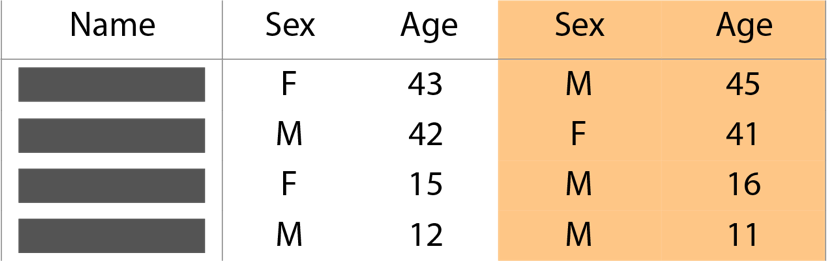
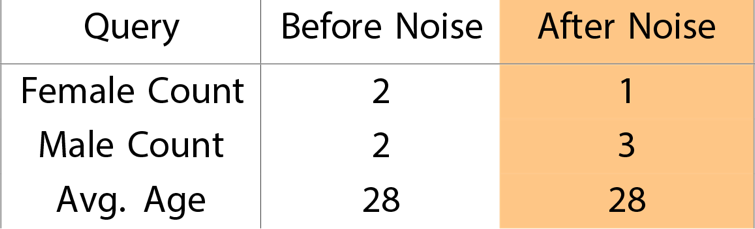

We report census data grouped by these areas, called blocks. Blocks can be empty, have a single house, or can have hundreds of residents, and are typically divided by geographic features like roads or creeks.
This block is home to a family of four.
This is what their data look like.
The first thing we do is remove the names and other identifying information from the data:
This may seem like enough to protect this family’s data, but what if someone knows this family’s address? Just from the information above, one can easily identify a mother and father, and their son and daughter, putting the family at risk.
To truly protect the privacy of this family, we must do more. We want to provide accurate data while protecting Americans from having their data identified. We do this by making small, random changes to the data before we publish our reports.
This is called adding noise to the data.
For example, let’s add random noise to this family’s data. Now the data look like this:

Let us compare the aggregate data we might report for the original and noisy data.

Adding noise to the data creates uncertainty.
Say a person was looking at the data for this census block, and knew that only one family lived there. Knowing that noise has changed some of the data, they will not know from our data whether the family has 0, 1, 2, 3, or even 4 female members. This uncertainty about which numbers are exact and which have been adjusted protects families from having their data identified.
Looking at the raw data, the average age has remained the same, but the Female Count and Male Count have both changed. In the next section, we explore this relationship between privacy and data accuracy.
It is important to note that though some statistics are adjusted with noise, the total number of people counted will not change. Adding noise does not create imaginary people, it simply adjusts existing data values to protect the data of individuals.